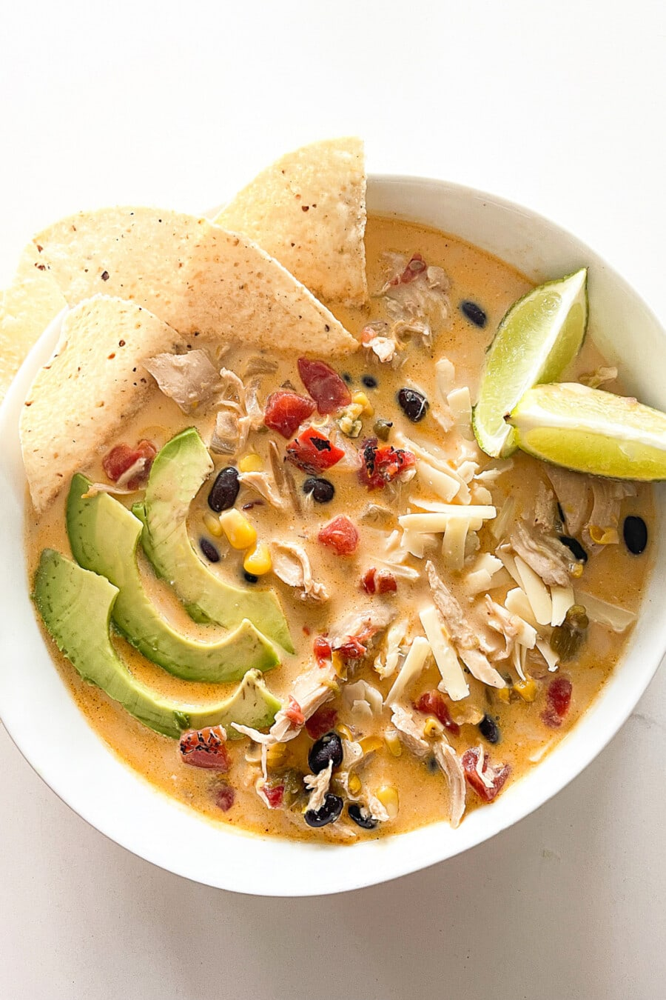

Home
Crockpot White Chicken Chili

Crockpot White Chicken Chili with Tortilla Chips, Avacado Slices, and Lime
This crockpot chicken chili recipe is a seasonal staple dish in our home. It's creamy, filling, and flavorful.
Most importantly, it is so simple and easy to make!
Ingredients
- 2 large chicken breasts
- 1 can black beans drained and rinsed
- 10 ounces can Rotel tomatoes with green chilis undrained
- 1 packet dranch dressing
- 1 teaspoon ground cumin
- 1 Tablespoon chili powder
- 1 teaspoon onion powder
- 1/2 cup water
- 8 ounces cream cheese
Toppings
- Cheese
- Sour cream
- Avacados
- Fresh tomatoes
- Tortilla chips/Fritos